Candidate List 20260420 Previous Day Next Day Section 1: New Sources (age<1d) Cosmological Afterglow
Section 2: Old (1-5d) sources observed last night placeholder
Section 1: New Afterglow/FBOT Cands Last Night (4)
1. ZTF26aatipcy (Afterglow?) [Back to Top] [Share] [Trigger Swift] [Fritz ] [Lasair ]RA, Dec: 135.6455, 11.92302 9h 2m34.92s, 11d55m22.89sGalactic (l, b): 216.94588, 34.45364 WARNING: -4.73 deg from ecliptic plane ext(g-r) = 0.03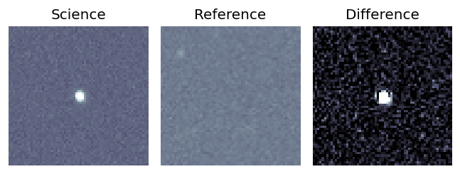
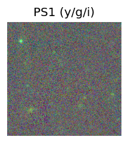
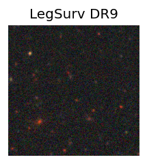
LegacySurvey: 1 sources in 3 arcsec Closest: d = 5.48 arcsec, 195.4 deg (east of north) photoz=0.75 (68% bounds 0.66, 0.86), type=REX peak abs mag = -27.06 (68% bounds -26.7, -27.43) 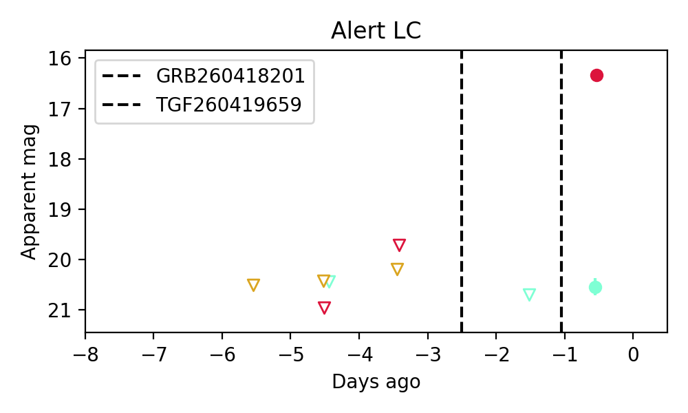
Consistent with synchrotron, g-r>0!
2. ZTF26aatipcz (Afterglow?) [Back to Top] [Share] [Trigger Swift] [Fritz ] [Lasair ]RA, Dec: 134.93387, 12.27934 8h59m44.13s, 12d16m45.61sGalactic (l, b): 216.20264, 33.97058 WARNING: -4.59 deg from ecliptic plane ext(g-r) = 0.024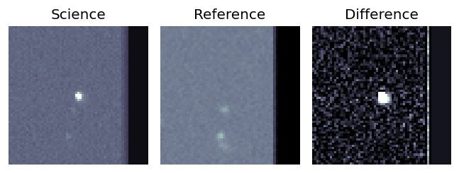
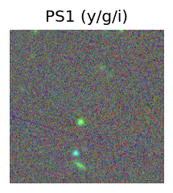
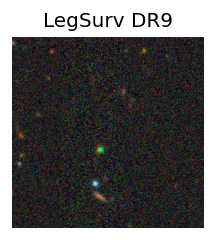
peak abs mag = -24.59 LegacySurvey: 1 sources in 3 arcsec Closest: d = 6.91 arcsec, 156.8 deg (east of north) photoz=0.36 (68% bounds 0.33, 0.4), type=DEV peak abs mag = -24.3 (68% bounds -24.11, -24.55) 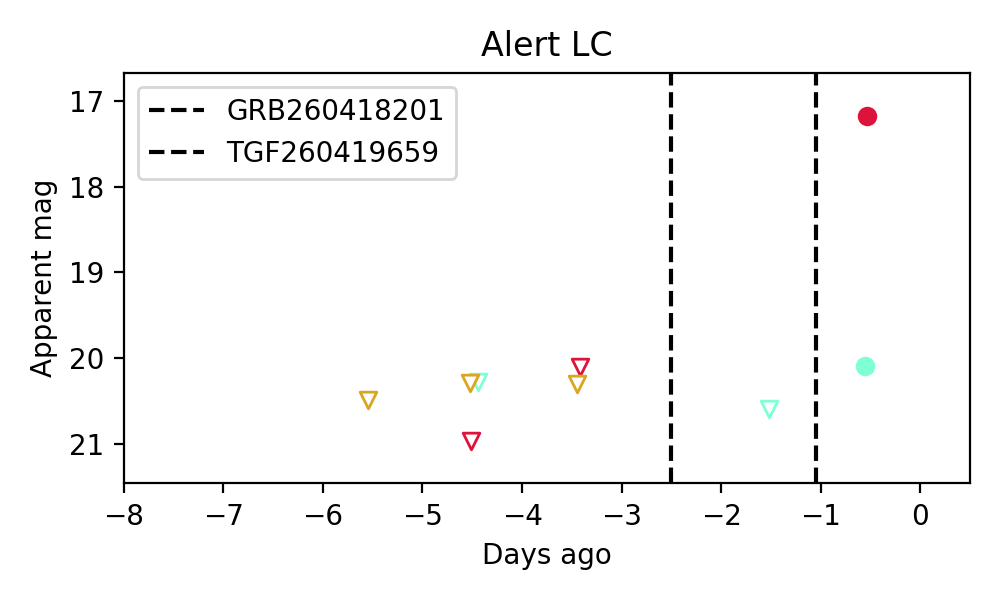
Consistent with synchrotron, g-r>0!
3. ZTF26aatirtk (Afterglow?) [Back to Top] [Share] [Trigger Swift] [Fritz ] [Lasair ]RA, Dec: 133.60349, 11.14681 8h54m24.84s, 11d 8m48.50sGalactic (l, b): 216.77515, 32.31233 ext(g-r) = 0.042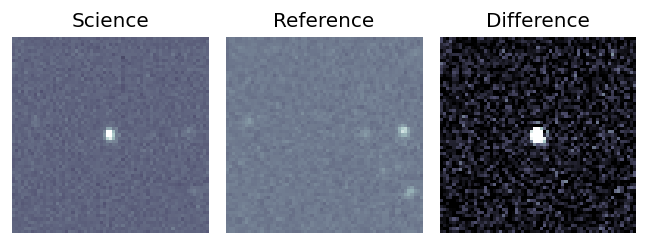
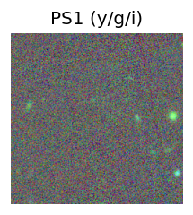
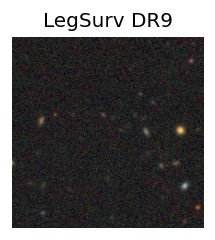
peak abs mag = -24.75 LegacySurvey: 1 sources in 3 arcsec Closest: d = 4.71 arcsec, 277.9 deg (east of north) photoz=0.55 (68% bounds 0.42, 0.83), type=PSF peak abs mag = -25.13 (68% bounds -24.42, -26.23) 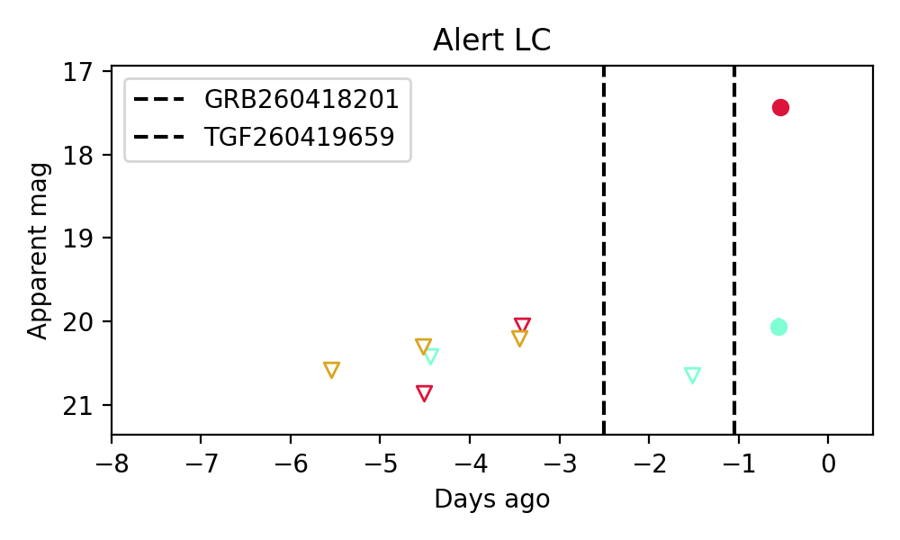
Consistent with synchrotron, g-r>0!
4. ZTF26aatpmfa (FBOT?) [Back to Top] [Share] [Trigger Swift] [Fritz ] [Lasair ]RA, Dec: 216.71608, 60.40887 14h26m51.86s, 60d24m31.93sGalactic (l, b): 103.55857, 52.98176 ext(g-r) = 0.013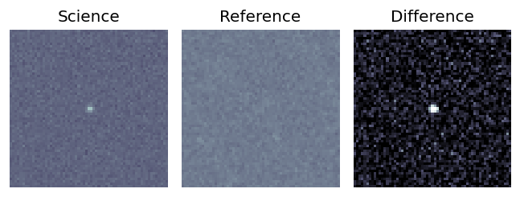
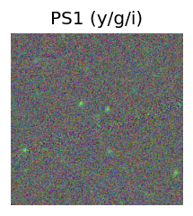
peak abs mag = -23.50 LegacySurvey: 1 sources in 3 arcsec Closest: d = 0.23 arcsec, 351.1 deg (east of north) photoz=0.86 (68% bounds 0.53, 1.15), type=REX peak abs mag = -24.34 (68% bounds -23.07, -25.13) 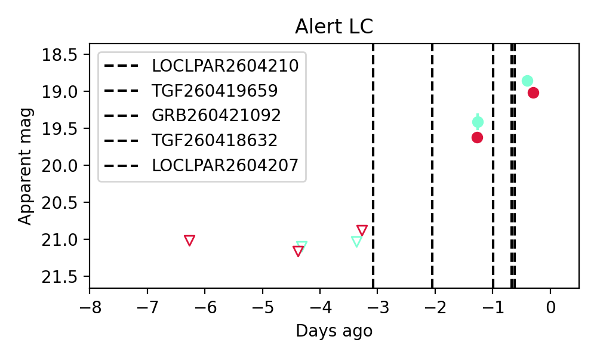
Section 2: Older Sources Observed Last Night (21)
0. ZTF26aasnlpp (FBOT?) [Back to Top] [Share] [Trigger Swift] [Fritz ] [Lasair ]RA, Dec: 220.23186, 5.4102 14h40m55.65s, 5d24m36.72sGalactic (l, b): 358.04024, 56.07967 ext(g-r) = 0.04peak abs mag = -21.09 LegacySurvey: 1 sources in 3 arcsec Closest: d = 0.33 arcsec, 4.5 deg (east of north) photoz=0.04 (68% bounds 0.03, 0.06), type=SER peak abs mag = -18.96 (68% bounds -18.34, -19.72)
1. ZTF26aaspazb (FBOT?) [Back to Top] [Share] [Trigger Swift] [Fritz ] [Lasair ]RA, Dec: 207.11549, 77.75608 13h48m27.72s, 77d45m21.90sGalactic (l, b): 119.08186, 38.94269 ext(g-r) = 0.027LegacySurvey: 1 sources in 3 arcsec Closest: d = 0.80 arcsec, 93.9 deg (east of north) photoz=0.12 (68% bounds 0.09, 0.15), type=SER peak abs mag = -19.87 (68% bounds -19.24, -20.48) Consistent with synchrotron, g-r>0!
2. ZTF26aaspjvp (Afterglow?) [Back to Top] [Share] [Trigger Swift] [Fritz ] [Lasair ]RA, Dec: 297.24031, 4.15287 19h48m57.67s, 4d 9m10.35sGalactic (l, b): 43.33696, -10.80347 ext(g-r) = 0.187PS1: 1 source in 3 arcsec Closest: d = 4.77 arcsec photoz=0.36+/-0.49 peak abs mag = -26.09
3. ZTF26aaspkec (FBOT?) [Back to Top] [Share] [Trigger Swift] [Fritz ] [Lasair ]RA, Dec: 298.01924, 5.89296 19h52m4.62s, 5d53m34.67sGalactic (l, b): 45.26921, -10.64341 ext(g-r) = 0.19PS1: 1 source in 3 arcsec Closest: d = 6.34 arcsec photoz=0.50+/-0.02 peak abs mag = -27.42
4. ZTF26aasubdy (FBOT?) [Back to Top] [Share] [Trigger Swift] [Fritz ] [Lasair ]RA, Dec: 141.1276, 11.38366 9h24m30.62s, 11d23m1.16sGalactic (l, b): 220.42174, 39.07703 WARNING: -3.65 deg from ecliptic plane ext(g-r) = 0.037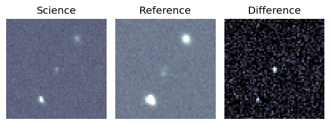
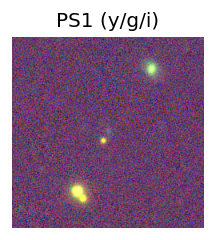
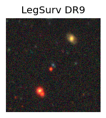
peak abs mag = -24.65 LegacySurvey: 1 sources in 3 arcsec Closest: d = 0.11 arcsec, 183.9 deg (east of north) photoz=0.15 (68% bounds 0.09, 0.45), type=DEV peak abs mag = -19.9 (68% bounds -18.61, -22.61) 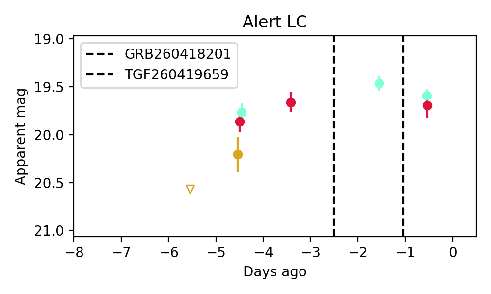
Consistent with synchrotron, g-r>0!
5. ZTF26aasulpk (FBOT?) [Back to Top] [Share] [Trigger Swift] [Fritz ] [Lasair ]RA, Dec: 131.66515, 80.78956 8h46m39.64s, 80d47m22.41sGalactic (l, b): 132.37423, 31.24805 ext(g-r) = 0.023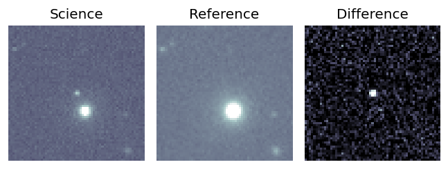
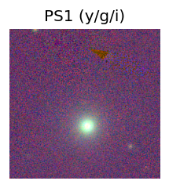
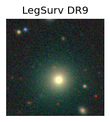
LegacySurvey: 1 sources in 3 arcsec Closest: d = 0.73 arcsec, 108.9 deg (east of north) photoz=0.79 (68% bounds 0.69, 0.94), type=DEV peak abs mag = -24.99 (68% bounds -24.62, -25.43) 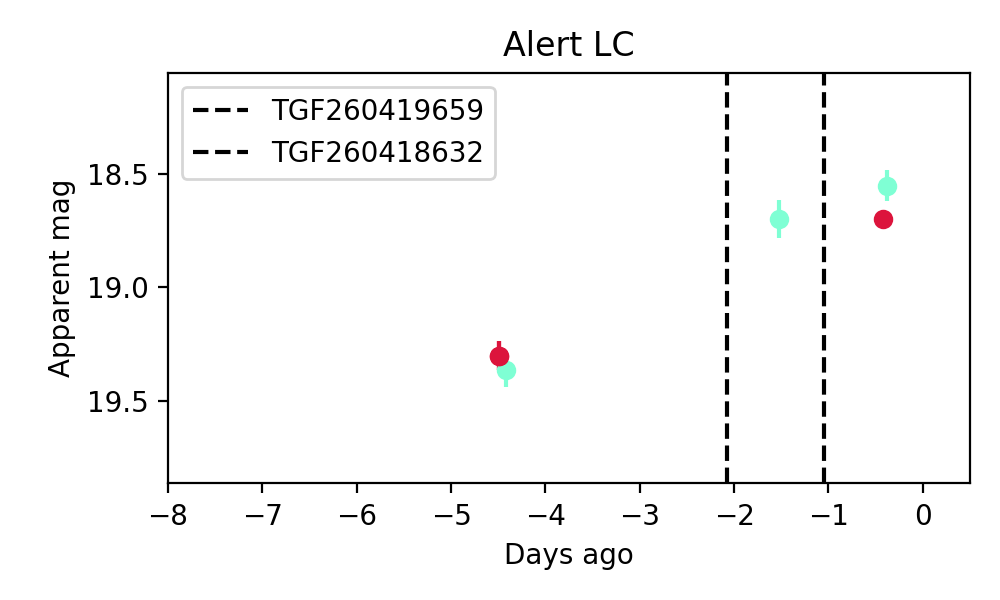
6. ZTF26aasvjqa (FBOT?) [Back to Top] [Share] [Trigger Swift] [Fritz ] [Lasair ]RA, Dec: 185.17651, 23.64014 12h20m42.36s, 23d38m24.50sGalactic (l, b): 237.92493, 82.23411 ext(g-r) = 0.018peak abs mag = -20.46 LegacySurvey: 1 sources in 3 arcsec Closest: d = 2.13 arcsec, 264.4 deg (east of north) photoz=0.13 (68% bounds 0.1, 0.15), type=SER peak abs mag = -19.52 (68% bounds -18.98, -19.87)
7. ZTF26aasvrgq (Afterglow?) A ) [Back to Top] [Share] [Trigger Swift] [Fritz ] [Lasair ]RA, Dec: 190.06189, 46.85162 12h40m14.85s, 46d51m5.83sGalactic (l, b): 128.57434, 70.15384 ext(g-r) = 0.017LegacySurvey: 1 sources in 3 arcsec Closest: d = 0.15 arcsec, 323.9 deg (east of north) photoz=0.59 (68% bounds 0.18, 1.12), type=PSF peak abs mag = -27.48 (68% bounds -24.43, -29.17)
8. ZTF26aasvsgb (FBOT?) [Back to Top] [Share] [Trigger Swift] [Fritz ] [Lasair ]RA, Dec: 150.27578, 12.89376 10h 1m6.19s, 12d53m37.52sGalactic (l, b): 223.97052, 47.77541 WARNING: 0.71 deg from ecliptic plane ext(g-r) = 0.036peak abs mag = -23.87 LegacySurvey: 1 sources in 3 arcsec Closest: d = 1.05 arcsec, 206.2 deg (east of north) photoz=0.06 (68% bounds 0.05, 0.11), type=SER peak abs mag = -18.27 (68% bounds -17.68, -19.45)
9. ZTF26aaswggx (FBOT?) [Back to Top] [Share] [Trigger Swift] [Fritz ] [Lasair ]RA, Dec: 171.36776, 55.39877 11h25m28.26s, 55d23m55.58sGalactic (l, b): 145.86843, 57.73431 ext(g-r) = 0.014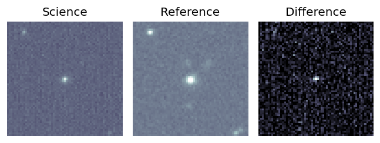
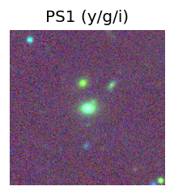
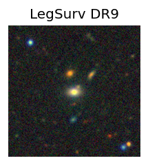
peak abs mag = -19.44 peak abs mag = -19.61 LegacySurvey: 1 sources in 3 arcsec Closest: d = 0.63 arcsec, 175.1 deg (east of north) photoz=0.16 (68% bounds 0.15, 0.16), type=SER peak abs mag = -19.63 (68% bounds -19.51, -19.74) 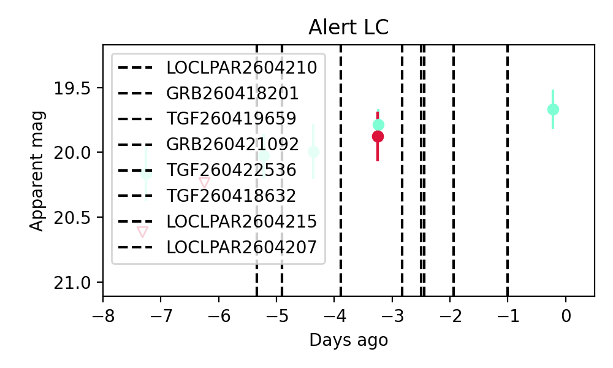
Consistent with synchrotron, g-r>0!
10. ZTF26aasxsos (FBOT?) [Back to Top] [Share] [Trigger Swift] [Fritz ] [Lasair ]RA, Dec: 187.54973, 18.68154 12h30m11.93s, 18d40m53.54sGalactic (l, b): 271.7818, 80.24292 ext(g-r) = 0.028peak abs mag = -20.69 LegacySurvey: 1 sources in 3 arcsec Closest: d = 1.94 arcsec, 185.4 deg (east of north) photoz=0.25 (68% bounds 0.19, 0.41), type=REX peak abs mag = -20.55 (68% bounds -19.8, -21.75)
11. ZTF26aatahtv (Afterglow?) [Back to Top] [Share] [Trigger Swift] [Fritz ] [Lasair ]RA, Dec: 228.80901, -6.11077 15h15m14.16s, -6d-6m-38.78sGalactic (l, b): 354.58542, 41.90074 ext(g-r) = 0.093LegacySurvey: 1 sources in 3 arcsec Closest: d = 0.04 arcsec, 121.3 deg (east of north) photoz=0.95 (68% bounds 0.64, 1.25), type=PSF peak abs mag = -26.89 (68% bounds -25.83, -27.62)
12. ZTF26aatbvvn (Afterglow?) [Back to Top] [Share] [Trigger Swift] [Fritz ] [Lasair ]RA, Dec: 268.2875, 11.04177 17h53m9.00s, 11d 2m30.38sGalactic (l, b): 36.41723, 17.88481 ext(g-r) = 0.268PS1: 1 source in 3 arcsec Closest: d = 8.70 arcsec photoz=0.52+/-0.07 peak abs mag = -24.79
13. ZTF26aatdlls (FBOT?) [Back to Top] [Share] [Trigger Swift] [Fritz ] [Lasair ]RA, Dec: 175.03652, 27.66023 11h40m8.77s, 27d39m36.84sGalactic (l, b): 206.89549, 74.18045 ext(g-r) = 0.026peak abs mag = -17.36 LegacySurvey: 1 sources in 3 arcsec Closest: d = 2.81 arcsec, 225.0 deg (east of north) photoz=0.16 (68% bounds 0.04, 0.67), type=REX peak abs mag = -20.93 (68% bounds -17.78, -24.54) Consistent with synchrotron, g-r>0!
14. ZTF26aathdoe (Afterglow?) [Back to Top] [Share] [Trigger Swift] [Fritz ] [Lasair ]RA, Dec: 87.53759, 45.17703 5h50m9.02s, 45d10m37.32sGalactic (l, b): 166.44122, 9.07034 ext(g-r) = 0.381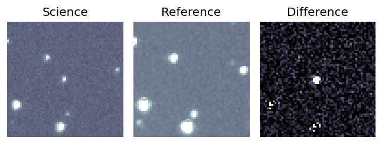
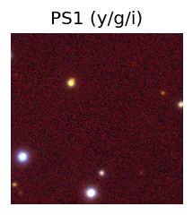
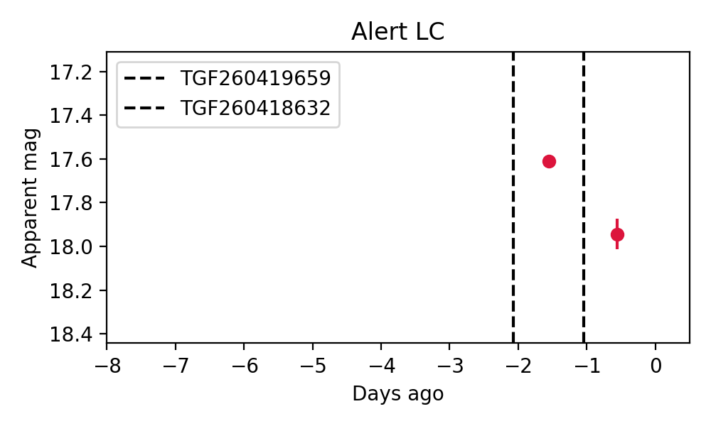
15. ZTF26aatikge (FBOT?) [Back to Top] [Share] [Trigger Swift] [Fritz ] [Lasair ]RA, Dec: 151.19845, -0.47103 10h 4m47.63s, 0d-28m-15.71sGalactic (l, b): 240.5637, 41.38616 ext(g-r) = 0.05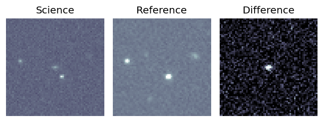
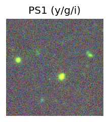
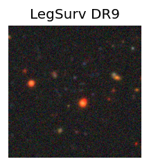
LegacySurvey: 1 sources in 3 arcsec Closest: d = 0.40 arcsec, 89.8 deg (east of north) photoz=1.11 (68% bounds 0.75, 1.74), type=REX peak abs mag = -24.96 (68% bounds -23.9, -26.15) 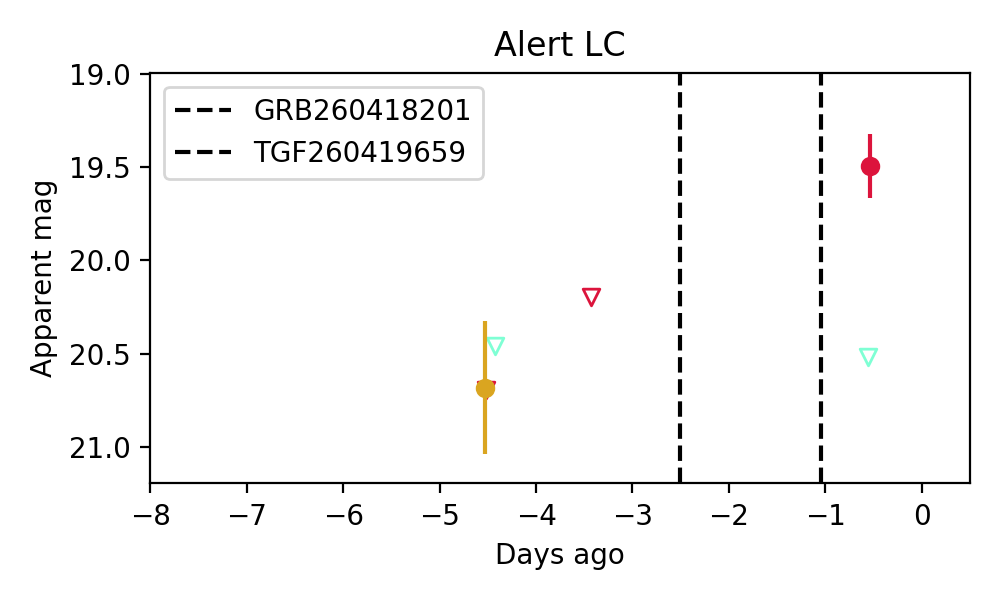
16. ZTF26aatirvy (FBOT?) [Back to Top] [Share] [Trigger Swift] [Fritz ] [Lasair ]RA, Dec: 129.89999, 41.13295 8h39m36.00s, 41d 7m58.63sGalactic (l, b): 180.31497, 37.20681 ext(g-r) = 0.036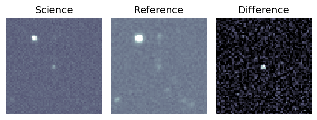
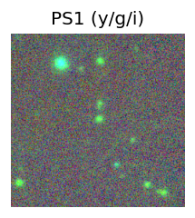
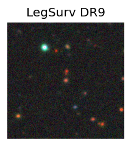
peak abs mag = -23.42 LegacySurvey: 1 sources in 3 arcsec Closest: d = 0.12 arcsec, 242.8 deg (east of north) photoz=0.72 (68% bounds 0.68, 0.75), type=REX peak abs mag = -23.19 (68% bounds -23.05, -23.3) 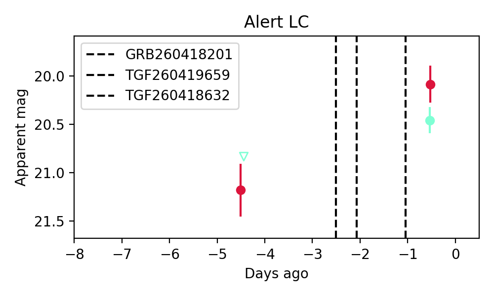
Consistent with synchrotron, g-r>0!
17. ZTF26aatntih (FBOT?) [Back to Top] [Share] [Trigger Swift] [Fritz ] [Lasair ]RA, Dec: 235.00087, -4.21294 15h40m0.21s, -4d-12m-46.59sGalactic (l, b): 1.89982, 38.65556 ext(g-r) = 0.221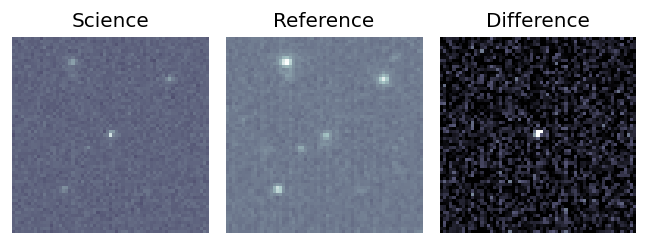
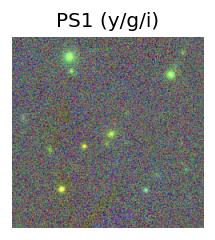
PS1: 1 source in 3 arcsec Closest: d = 1.14 arcsec photoz=0.61+/-0.06 peak abs mag = -23.84 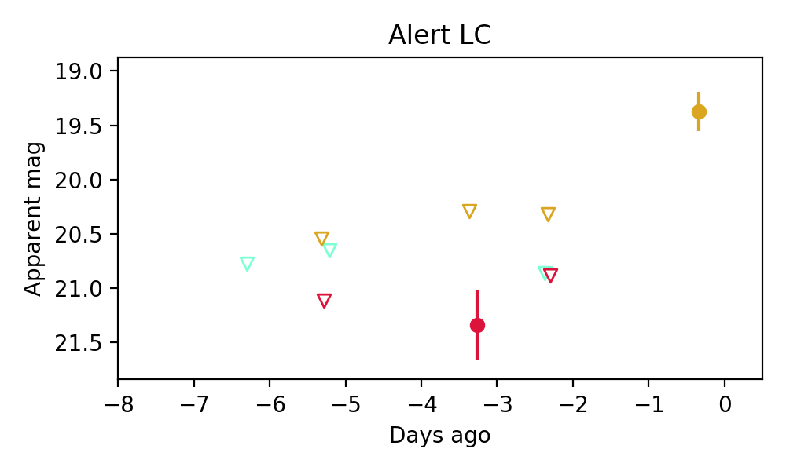
18. ZTF26aatpqjx (Afterglow?FBOT?) [Back to Top] [Share] [Trigger Swift] [Fritz ] [Lasair ]RA, Dec: 247.23442, 8.04178 16h28m56.26s, 8d 2m30.42sGalactic (l, b): 23.16914, 35.24621 ext(g-r) = 0.074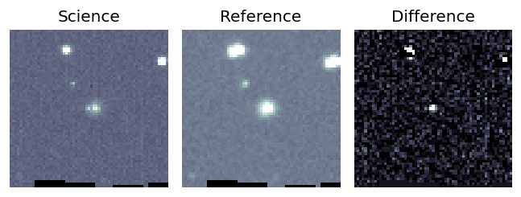
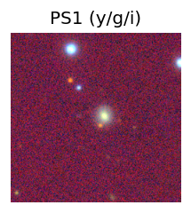
peak abs mag = -19.95 LegacySurvey: 1 sources in 3 arcsec Closest: d = 1.18 arcsec, 197.1 deg (east of north) photoz=0.12 (68% bounds 0.04, 0.32), type=EXP peak abs mag = -18.99 (68% bounds -16.57, -21.41) 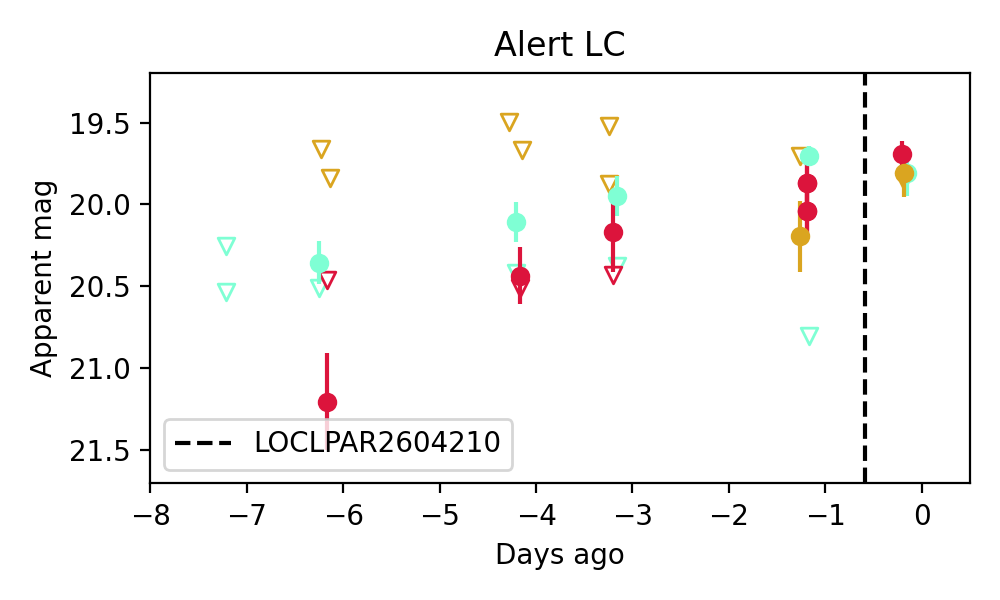
19. ZTF26aatpvda (FBOT?) [Back to Top] [Share] [Trigger Swift] [Fritz ] [Lasair ]RA, Dec: 227.50443, 5.45728 15h10m1.06s, 5d27m26.22sGalactic (l, b): 5.89614, 50.55473 ext(g-r) = 0.045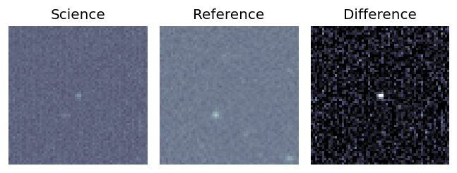
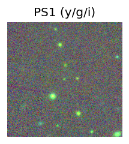
LegacySurvey: 1 sources in 3 arcsec Closest: d = 0.37 arcsec, 110.9 deg (east of north) photoz=0.52 (68% bounds 0.44, 0.62), type=PSF peak abs mag = -22.08 (68% bounds -21.61, -22.54) 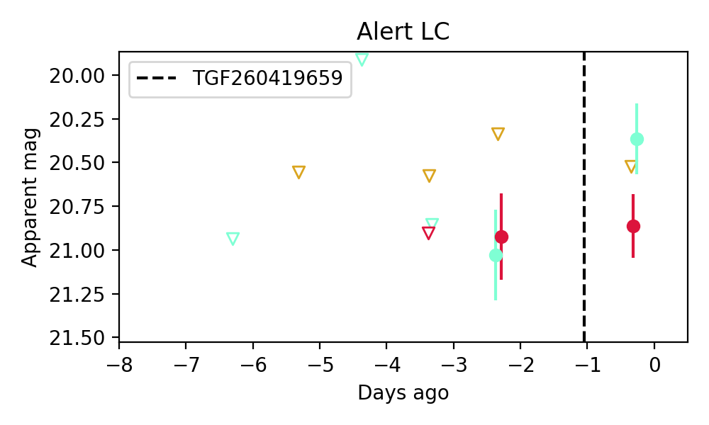
20. ZTF26aatpwvt (Afterglow?) [Back to Top] [Share] [Trigger Swift] [Fritz ] [Lasair ]RA, Dec: 230.05042, 4.07011 15h20m12.10s, 4d 4m12.41sGalactic (l, b): 6.54282, 47.69425 ext(g-r) = 0.048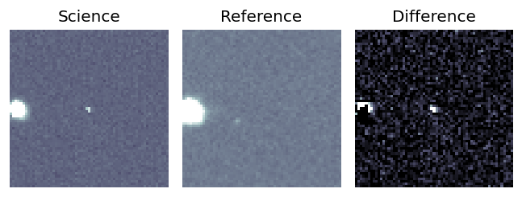
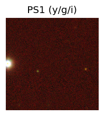
LegacySurvey: 1 sources in 3 arcsec Closest: d = 7.34 arcsec, 281.4 deg (east of north) photoz=0.47 (68% bounds 0.37, 0.62), type=PSF peak abs mag = -22.73 (68% bounds -22.11, -23.45) 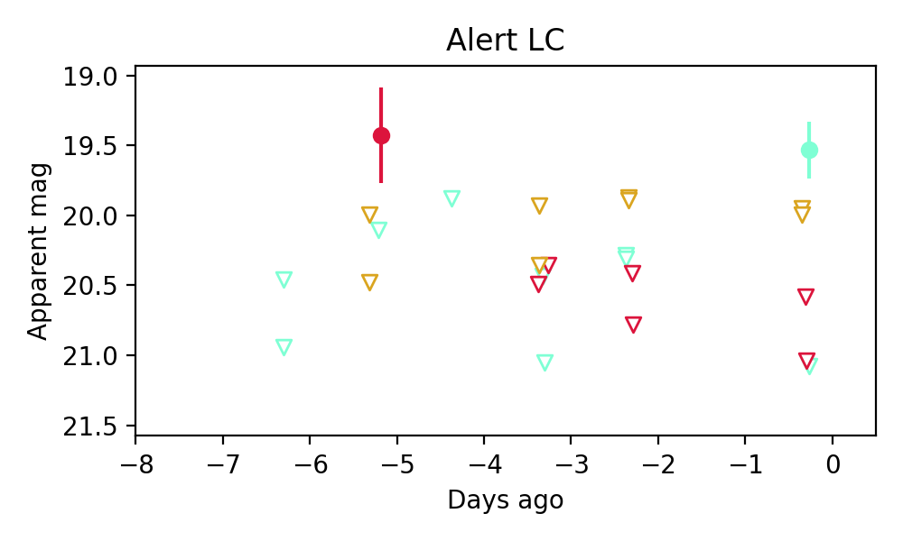